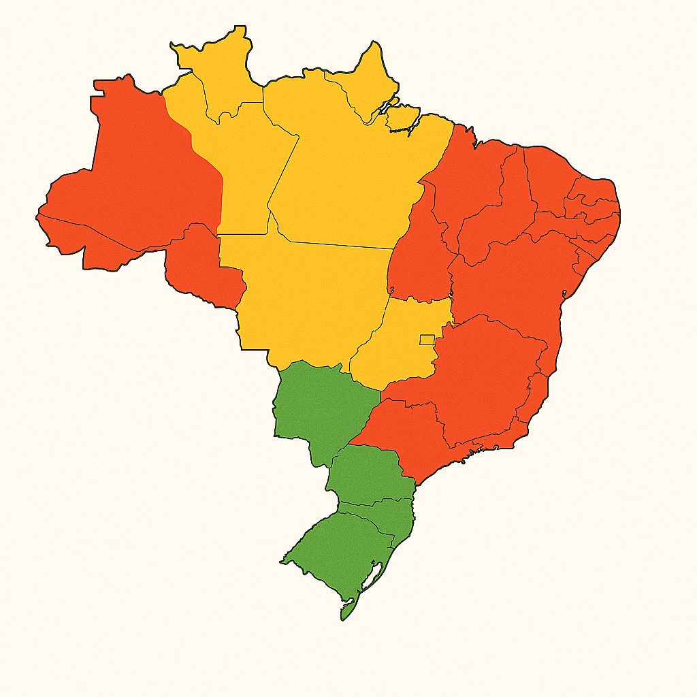

Mapa de Áreas de Risco
Visualize em tempo real as áreas com maior probabilidade de enchentes e alagamentos.

Legenda
Risco Alto
Risco Médio
Risco Baixo
Como interpretar o mapa
As áreas destacadas no mapa representam locais com histórico de enchentes ou características geográficas que aumentam o risco.
- Vermelho: Risco alto - Áreas que frequentemente sofrem com enchentes severas
- Amarelo: Risco médio - Áreas com ocorrências ocasionais de alagamentos
- Verde: Risco baixo - Áreas geralmente seguras, mas que podem ser afetadas em eventos extremos